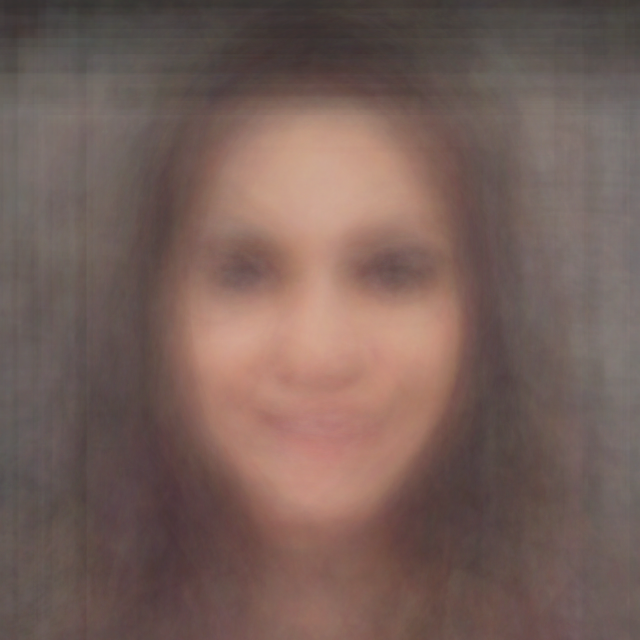
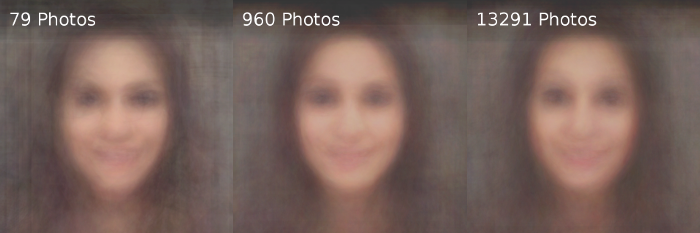
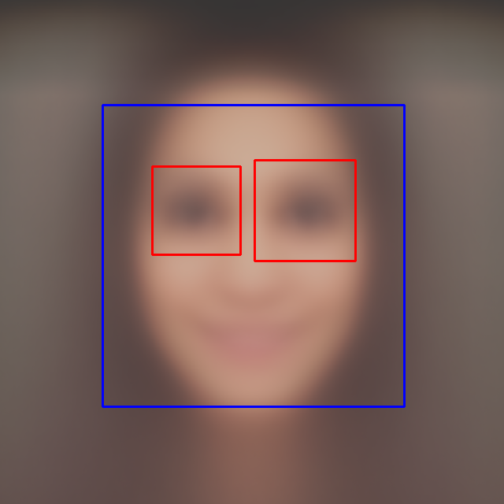

Picturing the Average Tinder Girl
Thu 08 January 2015
In this article, I'm going to discuss the steps I took to get an image of the average Tinder girl. If you're also interested in a general analysis of the average Tinder girl's profile, make sure to Meet Emily: The Average Tinder Girl.
You can get the scripts and the data I've collected here.
The Bot
Tinder is a simple dating app that has become quite popular, popular enough to attract bot accounts advertising purposes. Users of Tinder will be certainly be familiar with the bots that spam simple ads as well as those that semi-intelligently respond to conversation leading into a more convincing ad. After dealing with these bots myself, I was intrigued by how I might go about making my own bot for entertainment purposes. It turns out that it's actually relatively easy. The Tinder API only requires a Facebook authentication token of an account with an active Tinder app to retrieve a token for Tinder's API. After that, the Tinder API is wide open. There's even a couple unofficial wrappers available, I'm using Tinder Pyro 1.
After some preliminary fooling around, the treasure trove of data soon became evident. I wasn't sure what I was going to do with it, but I had my bot downloading and storing profile data anyway. After a week I had a couple gigs of data and by the time I figured what to do with it all, I had gone through over a hundred-thousand profiles. What was I going to do with all that? It seemed pretty obvious. Let's construct the average Tinder girl! So then...
What does she look like?
With all those photos, we should be able to build up some idea of what this girl looks like. Well a quick and dirty attempt at getting an image of our girl is to blindly average all the profile pictures I've collected. Here's what I got after adding 62820 primary profile photos together:
It sure doesn't show any detail, but there is some sign that this is a human being. If you squint you can make out a flesh-tinted blob around the center. Perhaps that's a hint of shoulders on the lower half? I was quite surprised that anything of remote resemblance to a person came out of this. Of course this isn't even close to what we're looking for, and fortunately, we can still do better.
Getting rid of the junk
If you've swiped through Tinder profiles before, you'll know there's a lot of variation in the pictures. Some are from far away, some at strange angles, sometimes it's a group shot, or maybe there isn't even a person in it! Sorting out all the awful pictures that are ruining my average is going to help out a lot. If only we could check that each picture being averaged is of a person. Well, thankfully face detection is something that is widely studied and quite easy to use. OpenCV has a cascade classifier2 for detecting objects and even comes with some pre-trained cascades for face detection. Awesome! Here's the meat of what I'm doing to find faces in an image:
face_cascade = cv2.CascadeClassifier( haar_map )
img = cv2.imread( path )
gray = cv2.cvtColor(img, cv2.COLOR_BGR2GRAY)
faces = face_cascade.detectMultiScale(
gray,
scaleFactor=1.2,
minNeighbors=5,
minSize=(30, 30),
flags = cv2.cv.CV_HAAR_SCALE_IMAGE
)
Once we get the faces in the image, it's time to check that it's an acceptable picture There's only two criteria I'm going to match for:
- Is there exactly one face in the photo?
- If so, is it at least 100x100px large?
If both of these criteria are met, great! We'll average it. If not, just ignore it. Here's what happens after sorting through the same profile pictures as before:
This is after sorting through the same 62820 profiles as before. The detection method narrowed it down to 21001 positive samples (that's 33.56%). And, ehh, It's better, a little. There's more shape to the head. There's some sign of a chest and neck now too. At the very least, I'd say this is good enough evidence to say that the average girl on Tinder is white (or our cascade is biased!). But we still don't have any features, let alone something that can be identified as a face!
Bringing her into focus
There's one thing that the cascade classifier is doing that is making the average only 'meh' and that is that it doesn't care about the location of identified faces. The classifier will detect a face anywhere in the image, but I want something like a portrait-like result. This means that just a mere detection is still going to result in a blurry, out of focus, image. Clearly we need some better cooperation. The classifier does report the location of each object it detects. Let's try scaling each photo to frame only the reported face and average those. This is pretty easy to do with OpenCV using a perspective transform3. Here's how I do that:
face = np.float32([[x,y],[x+w,y],
[x,y+h],[x+w,y+h]])
frame = np.float32([[pic_w,pic_w],
[pic_h,pic_w],
[pic_w,pic_h],
[pic_h,pic_h]])
M = cv2.getPerspectiveTransform(face, frame)
new_img = cv2.warpPerspective(img, M, (pic_w,pic_h))
Here, I'm taking the bounding box of the face and having OpenCV get the transform required to make it be framed in the full picture. I then apply that transform to the image, and carry on with the averaging from there. After that, we get a nice picture:

Now that's pretty good! This is for the same 21001 positive samples as before, only now they've been centered properly.
An actual average
There's still a problem with the averaging, however. If we make a comparison of different averages for different numbers of samples, we can see they don't really change after a certain point.

The problem is that our profile images are only 8-bit JPEGs and are being processed as such. This means that we're going to have trouble with precision when we start getting close to 256 samples. That's clearly not good enough when there's more than 10000 images to be combined! To counter this, I could covert all the images to some higher bit-depth, but instead I've chosen to simply save the average of every 100 positive samples and then average all of those. In addition, I'm also using a numpy ndarray with a type of float64 to hold all of my averaging data, so there shouldn't be any concern for precision issues in this method. After all this, we get our girl:
It's pretty clear that there is a lot less noise than the last attempt, which we should expect from so many samples. Even more, we can even use our cascade to see if the result is identifiable as a face:

And it turns out it is! That shouldn't be too surprising seeing as it's just an average of positive matches. Though it's still evidence to show that the bounding boxes on the detected faces were consistent enough to provide a strong average.
-
Tinder Pyro, an unofficial ruby wrapper for the Tinder API. ↩
-
OpenCV's getPerspectiveTransform applied with warpPerspective ↩